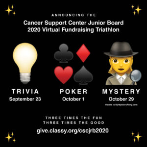

an·cil·lar·y - (adjective) providing necessary support to the primary activities or operation of an organization, institution, industry, or system.
The Cancer Support Center is fortunate to have ambassadors that help spread the word about the important work done at The Center on behalf of those living with cancer. In addition to The Center’s Board of Directors, there are four ancillary boards that are committed to promoting and supporting The Center through their meetings and special events. The ancillary boards are: the Women’s Board, the Homewood Community Board, the Mokena Community Board, and the Junior Board. Meet our Boards Here!
For more information about our ancillary boards call: +1 (708) 798-9171
| Homewood Community Board Brent Bacchus, President |
Women's Board Deborah Okleshen, President |
|---|---|
The Homewood Community Board is comprised of local community Events Texas Hold 'Em - 2/1/2020 Red Solo Cup |
The Women’s Board meets every third Tuesday of the Events Holiday Housewalk |
| Mokena Community Board Jen Adams, President |
Junior Board, Dan Breen, President |
The Mokena Community Board is comprised of residents in the Events March Madness Children's Pajama Holiday Party |
Junior Board is comprised of young professionals Events Next Level Virtual Fundraising Triathlon  |
The Cancer Support Center is fortunate to have ambassadors that help spread the word about the important work done at The
Center on behalf of those living with cancer. In addition to The Center’s Board of Directors, there are four ancillary boards that are
committed to promoting and supporting The Center through their meetings and special events.
The Ancillary Boards are: the Women’s Board, the Homewood Community Board, The Junior Board, and the Mokena Community Board.
EventsTexas Hold 'Em – Community Board of Homewood (2/1/2020)
Raising Spirits – Junior Board (TBA)
Red Solo Cup – Community Board of Homewood (TBA)
Holiday Luncheon & Bazaar – The Women’s Board (TBA)
Magic of Christmas – Community Board of Mokena (TBA)